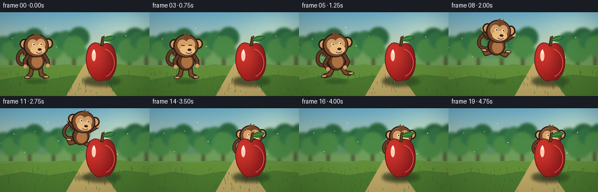
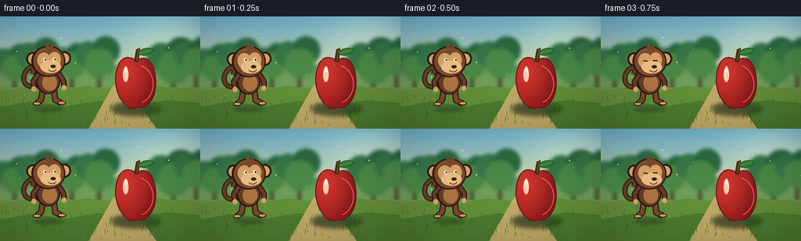

CODING AGENTS AS PIXEL WORLD MODELS
traex/GPT-5.6-Sol · dynamic_spatial_relationship_0055
点击播放 · 原生 RGB 像素
逐轮保存的候选
回放视频、检查图与代码变化。
每份候选均可单独播放。实际图片检查记录在下方工具轨迹中。
候选 01播放与检查图
点击播放 · 原生 RGB 像素


展开代码变化
--- 上一保存版本
+++ 本次保存版本
@@ -0,0 +1,252 @@
+from pathlib import Path
+import math
+import numpy as np
+from PIL import Image, ImageDraw, ImageFilter
+import artifact_io
+
+# Deterministic hand-rendered 2D animation, rendered large then downsampled.
+W, H, N = 256, 144, 20
+SS = 4
+CW, CH = W * SS, H * SS
+ROOT = Path(__file__).resolve().parent
+rng = np.random.default_rng(55)
+
+def S(v):
+ return int(round(v * SS))
+
+def pts(seq):
+ return [(S(x), S(y)) for x, y in seq]
+
+def bezier(p0, p1, p2, p3, steps=12):
+ out = []
+ for t in np.linspace(0, 1, steps, endpoint=False):
+ q = 1-t
+ out.append((q**3*p0[0] + 3*q*q*t*p1[0] + 3*q*t*t*p2[0] + t**3*p3[0],
+ q**3*p0[1] + 3*q*q*t*p1[1] + 3*q*t*t*p2[1] + t**3*p3[1]))
+ return out
+
+def closed_beziers(segments):
+ out=[]
+ for seg in segments:
+ out += bezier(*seg, steps=14)
+ return pts(out)
+
+def line_curve(draw, points, fill, width):
+ draw.line(pts(points), fill=fill, width=S(width), joint='curve')
+
+def make_background(frame):
+ # Warm, painterly orchard depth; small shifts in foliage keep the scene alive.
+ y = np.arange(CH)[:, None]
+ top = np.array([111, 181, 210.], dtype=float)
+ horizon = np.array([242, 218, 150.], dtype=float)
+ a = np.clip(y/(CH*.72), 0, 1)[...,None]
+ arr = top[None,None,:]*(1-a) + horizon[None,None,:]*a
+ arr = np.repeat(arr, CW, axis=1)
+ # soft sun glow at upper right
+ yy, xx = np.mgrid[0:CH,0:CW]
+ glow=np.exp(-(((xx-S(220))/S(58))**2+((yy-S(25))/S(44))**2))*42
+ arr += glow[...,None]*np.array([1.0,.78,.38])[None,None,:]
+ bg = Image.fromarray(np.uint8(np.clip(arr,0,255)), 'RGB').convert('RGBA')
+ d = ImageDraw.Draw(bg, 'RGBA')
+ # distant hills
+ d.polygon(pts([(0,82),(0,68),(30,62),(61,68),(96,59),(129,69),(169,56),(207,62),(256,50),(256,94)]), fill=(94,143,102,155))
+ d.polygon(pts([(0,78),(38,72),(73,80),(116,66),(154,76),(190,66),(229,75),(256,68),(256,99),(0,99)]), fill=(111,157,91,215))
+ # blurred orchard trees
+ sway = math.sin(frame*.30)*0.7
+ trees = [(18,57,23),(50,51,25),(91,55,22),(126,50,26),(221,54,29),(250,49,24)]
+ for k,(tx,ty,r) in enumerate(trees):
+ tx2=tx+sway*(1 if k%2 else -1)
+ d.rounded_rectangle((S(tx2-2),S(ty+13),S(tx2+3),S(105)), radius=S(2), fill=(76,78,48,170))
+ for ox,oy,rr,col in [(-.52,-.05,.65,(54,119,71,205)),(.35,-.25,.7,(44,105,64,215)),(.05,.38,.74,(75,137,70,220))]:
+ d.ellipse((S(tx2+ox*r-rr*r),S(ty+oy*r-rr*r),S(tx2+ox*r+rr*r),S(ty+oy*r+rr*r)), fill=col)
+ bg=bg.filter(ImageFilter.GaussianBlur(S(2.2)))
+ d=ImageDraw.Draw(bg,'RGBA')
+ # field layers and foreground grass
+ d.rectangle((0,S(91),CW,CH), fill=(105,151,66,255))
+ d.polygon(pts([(0,96),(35,91),(75,95),(111,89),(153,95),(199,89),(256,93),(256,144),(0,144)]), fill=(99,144,58,255))
+ d.polygon(pts([(0,116),(39,109),(85,115),(126,108),(168,114),(214,107),(256,111),(256,144),(0,144)]), fill=(77,123,48,255))
+ # winding light path gives perspective
+ d.polygon(pts([(145,88),(160,88),(200,144),(113,144)]), fill=(192,170,103,100))
+ # grass blades, deterministic positions
+ grass_rng=np.random.default_rng(300+frame//4)
+ for _ in range(95):
+ gx=float(grass_rng.uniform(0,256)); gy=float(grass_rng.uniform(105,145)); gh=float(grass_rng.uniform(2,8))
+ col=(47,96+int(gy)%25,39,150)
+ d.line((S(gx),S(gy),S(gx+math.sin(gx)*.7),S(gy-gh)),fill=col,width=S(.45))
+ # floating sun motes
+ for m in range(14):
+ mx=(17+m*39.7+frame*(.22+.03*(m%3)))%256
+ my=24+(m*17)%67 + math.sin(frame*.25+m)*1.8
+ r=.35+(m%3)*.18
+ d.ellipse((S(mx-r),S(my-r),S(mx+r),S(my+r)),fill=(255,244,184,100))
+ return bg
+
+def monkey_sprite(pose='stand', blink=False, phase=0.0):
+ # Native canvas 104x124, anchor is (52,112). Character faces right.
+ im=Image.new('RGBA',(S(104),S(124)),(0,0,0,0)); d=ImageDraw.Draw(im,'RGBA')
+ dark=(64,38,28,255); edge=(45,28,23,255); brown=(105,61,38,255)
+ mid=(124,75,44,255); tan=(220,165,105,255); cream=(239,194,132,255)
+ # tail: a very recognizable upward curl, behind the body
+ tail=[]
+ p0=(37,77); p1=(18,87); p2=(8,72); p3=(16,57)
+ tail += bezier(p0,p1,p2,p3,18)
+ tail += bezier((16,57),(25,43),(33,54),(25,62),18)
+ line_curve(d, tail, edge, 8.0); line_curve(d, tail, brown, 5.0)
+ # legs change from planted to tucked in flight
+ if pose=='crouch':
+ legs=[[(43,86),(36,99),(24,102)],[(61,86),(68,98),(79,100)]]
+ elif pose=='flight':
+ legs=[[(43,85),(31,91),(26,84)],[(61,85),(72,89),(77,81)]]
+ else:
+ legs=[[(43,84),(40,101),(33,107)],[(60,84),(62,101),(72,106)]]
+ for leg in legs:
+ line_curve(d,leg,edge,10); line_curve(d,leg,mid,6.5)
+ fx,fy=leg[-1]
+ d.ellipse((S(fx-6),S(fy-3),S(fx+7),S(fy+3)),fill=edge)
+ d.ellipse((S(fx-4.5),S(fy-2),S(fx+5.5),S(fy+1.5)),fill=tan)
+ # torso and belly
+ d.ellipse((S(32),S(51),S(70),S(92)),fill=edge)
+ d.ellipse((S(35),S(52),S(68),S(90)),fill=brown)
+ d.ellipse((S(42),S(61),S(65),S(87)),fill=(178,118,68,255))
+ # arms: forward swing during the jump
+ if pose=='flight':
+ arms=[[(38,59),(25,50),(19,41)],[(67,59),(78,50),(85,44)]]
+ elif pose=='crouch':
+ arms=[[(38,60),(27,77),(33,88)],[(67,60),(75,76),(68,87)]]
+ else:
+ wig=math.sin(phase)*1.4
+ arms=[[(37,59),(28,72),(29+wig,84)],[(67,59),(75,71),(76-wig,82)]]
+ for arm in arms:
+ line_curve(d,arm,edge,9); line_curve(d,arm,brown,5.5)
+ hx,hy=arm[-1]
+ d.ellipse((S(hx-4),S(hy-4),S(hx+4),S(hy+4)),fill=tan)
+ # round ears behind head
+ d.ellipse((S(17),S(26),S(38),S(48)),fill=edge); d.ellipse((S(20),S(29),S(35),S(45)),fill=tan)
+ d.ellipse((S(66),S(25),S(87),S(47)),fill=edge); d.ellipse((S(69),S(28),S(84),S(44)),fill=tan)
+ # head cap
+ d.ellipse((S(25),S(16),S(78),S(65)),fill=edge)
+ d.ellipse((S(28),S(18),S(76),S(63)),fill=mid)
+ # lighter face mask: brow lobes + muzzle
+ d.ellipse((S(34),S(27),S(55),S(51)),fill=tan)
+ d.ellipse((S(51),S(26),S(71),S(50)),fill=tan)
+ d.ellipse((S(39),S(39),S(71),S(59)),fill=cream)
+ # eyes, gaze toward the apple/right
+ if blink:
+ d.line((S(42),S(39),S(49),S(40)),fill=edge,width=S(1.7))
+ d.line((S(57),S(39),S(64),S(39)),fill=edge,width=S(1.7))
+ else:
+ for ex,ey in [(46,38),(61,37.5)]:
+ d.ellipse((S(ex-2.7),S(ey-3),S(ex+2.7),S(ey+3)),fill=(248,238,210,255))
+ d.ellipse((S(ex-.3),S(ey-1.6),S(ex+2.1),S(ey+1.4)),fill=(28,23,20,255))
+ d.ellipse((S(ex+.4),S(ey-1.2),S(ex+1),S(ey-.6)),fill=(255,255,255,255))
+ # nose and happy mouth
+ d.ellipse((S(55),S(46),S(63),S(51)),fill=(58,34,29,255))
+ d.arc((S(51),S(48),S(64),S(57)),5,160,fill=(87,44,37,255),width=S(1.2))
+ # head highlight / fur tufts
+ d.arc((S(32),S(21),S(61),S(50)),190,280,fill=(156,98,56,190),width=S(1.2))
+ d.polygon(pts([(47,18),(51,12),(54,18),(59,13),(59,21)]),fill=mid)
+ return im
+
+def paste_monkey(scene, x, baseline, scale, pose, rotation, frame):
+ spr=monkey_sprite(pose, blink=(frame in (3,18)), phase=frame*.8)
+ if abs(scale-1)>1e-3:
+ spr=spr.resize((max(1,int(spr.width*scale)),max(1,int(spr.height*scale))),Image.Resampling.LANCZOS)
+ if rotation:
+ spr=spr.rotate(rotation, resample=Image.Resampling.BICUBIC, expand=True)
+ # Native anchor approximately center x and y=112, adjust after transformations by using visual bottom convention.
+ logical_w=spr.width/SS; logical_h=spr.height/SS
+ left=S(x-logical_w/2); top=S(baseline-logical_h*(112/124))
+ scene.alpha_composite(spr,(left,top))
+
+def apple_polygon(cx=174):
+ segs=[
+ ((cx,57),(cx-9,49),(cx-20,51),(cx-24,66)),
+ ((cx-24,66),(cx-31,84),(cx-23,108),(cx-10,116)),
+ ((cx-10,116),(cx-3,121),(cx+1,115),(cx+7,117)),
+ ((cx+7,117),(cx+22,114),(cx+29,89),(cx+23,69)),
+ ((cx+23,69),(cx+19,53),(cx+8,50),(cx,57)),
+ ]
+ return closed_beziers(segs)
+
+def draw_apple(scene, frame, cx=174):
+ # Contact shadow first, so the apple reads as fixed in the foreground.
+ sh=Image.new('RGBA',scene.size,(0,0,0,0)); sd=ImageDraw.Draw(sh,'RGBA')
+ sd.ellipse((S(cx-31),S(111),S(cx+32),S(126)),fill=(31,47,27,120))
+ sh=sh.filter(ImageFilter.GaussianBlur(S(3.0))); scene.alpha_composite(sh)
+ # Body gradient clipped to a hand-shaped apple mask.
+ poly=apple_polygon(cx)
+ mask=Image.new('L',scene.size,0); md=ImageDraw.Draw(mask); md.polygon(poly,fill=255)
+ yy,xx=np.mgrid[0:CH,0:CW]
+ # rich red body with light from upper-left
+ light=np.exp(-(((xx-S(cx-10))/S(30))**2+((yy-S(70))/S(43))**2))
+ shade=np.clip((xx-S(cx-25))/S(55),0,1)
+ R=154+62*light-38*shade; G=24+31*light-8*shade; B=24+20*light
+ rgba=np.dstack([R,G,B,np.full((CH,CW),255)]).clip(0,255).astype(np.uint8)
+ body=Image.fromarray(rgba,'RGBA'); body.putalpha(mask)
+ scene.alpha_composite(body)
+ d=ImageDraw.Draw(scene,'RGBA')
+ d.line(poly+[poly[0]],fill=(105,23,27,235),width=S(1.35),joint='curve')
+ # stem and leaf are also foreground, strengthening the occlusion cue
+ d.polygon(pts([(171,58),(174,42),(179,40),(177,59)]),fill=(75,49,25,255))
+ d.line(pts([(175,56),(177,42)]),fill=(142,90,39,210),width=S(1))
+ leaf=closed_beziers([
+ ((176,47),(185,36),(197,42),(197,43)),
+ ((197,43),(190,51),(182,52),(176,47))])
+ d.polygon(leaf,fill=(51,124,55,255)); d.line(leaf+[leaf[0]],fill=(31,86,43,255),width=S(.9))
+ d.line(pts([(178,47),(193,43)]),fill=(132,181,77,220),width=S(.7))
+ # glossy highlight and soft reflected warm edge
+ d.ellipse((S(cx-17),S(65),S(cx-10),S(84)),fill=(255,205,181,115))
+ d.ellipse((S(cx-15),S(64),S(cx-11.5),S(72)),fill=(255,245,226,205))
+ d.arc((S(cx-21),S(62),S(cx+22),S(112)),285,70,fill=(255,111,81,100),width=S(1.1))
+ # tiny grass in front of the fruit
+ for off in (-23,-17,18,26):
+ d.line(pts([(cx+off,119),(cx+off+(1 if off<0 else -1),112)]),fill=(54,108,38,230),width=S(.75))
+
+def smoothstep(u):
+ return u*u*(3-2*u)
+
+def render_frame(i):
+ scene=make_background(i)
+ # Position logic: a readable hold on the left, anticipation, arcing jump, then settle behind.
+ if i <= 4:
+ x=62 + math.sin(i*.7)*.6; base=116 + math.sin(i*.7)*.5
+ sc=.82; pose='stand'; rot=0
+ elif i==5:
+ x=64; base=119; sc=.84; pose='crouch'; rot=4
+ elif i<=14:
+ u=(i-6)/8
+ e=smoothstep(u)
+ x=67+(174-67)*e
+ # A high but fully framed arc; destination is higher/smaller to establish depth.
+ base=115*(1-u)+101*u - 24*math.sin(math.pi*u)
+ sc=.83*(1-u)+.75*u
+ pose='flight' if i<13 else 'crouch'; rot=-10*math.sin(math.pi*u)
+ else:
+ x=174 + math.sin((i-15)*.65)*.45
+ base=101 + (1-math.exp(-(i-14)*.9))*1.2 + math.sin((i-15)*.8)*.35
+ sc=.75; pose='stand'; rot=0
+ # Moving shadow follows horizontal motion and shrinks/lights under the leap.
+ sh=Image.new('RGBA',scene.size,(0,0,0,0)); sd=ImageDraw.Draw(sh,'RGBA')
+ jump=max(0,112-base)
+ sw=(23*sc)*(1-jump/100)
+ alpha=int(90*(1-min(jump/60,.7)))
+ sd.ellipse((S(x-sw),S(116),S(x+sw),S(122)),fill=(24,43,25,alpha))
+ sh=sh.filter(ImageFilter.GaussianBlur(S(2.2))); scene.alpha_composite(sh)
+ # Monkey is intentionally painted BEFORE the apple: on overlap it passes behind it.
+ paste_monkey(scene,x,base,sc,pose,rot,i)
+ draw_apple(scene,i,174)
+ # subtle foreground vignette for a cinematic finished frame
+ arr=np.asarray(scene.convert('RGB')).astype(np.float32)
+ yy,xx=np.mgrid[0:CH,0:CW]; dx=(xx-CW/2)/(CW/2); dy=(yy-CH/2)/(CH/2)
+ vig=np.clip(1-.10*(dx*dx+dy*dy),.82,1)[...,None]
+ arr*=vig
+ out=Image.fromarray(np.uint8(np.clip(arr,0,255))).resize((W,H),Image.Resampling.LANCZOS)
+ return np.asarray(out,dtype=np.uint8)
+
+def main():
+ frames=np.stack([render_frame(i) for i in range(N)],axis=0)
+ assert frames.shape==(20,144,256,3) and frames.dtype==np.uint8
+ artifact_io.save(frames,ROOT)
+
+if __name__=='__main__':
+ main()
可观测工具轨迹
实际执行的命令与返回图片。
命令 1exit 0
/bin/bash -lc "cat prompt.txt && printf '\\n---RULES---\\n' && cat GENERATION_RULES.md && printf '\\n---SPEC---\\n' && cat task_spec.json"
命令 2exit 0
/bin/bash -lc "find . -maxdepth 2 -type f -printf '%p %s bytes\\n' | sort"
命令 3exit 0
/bin/bash -lc "which ffmpeg || true; which python3; python3 - <<'PY' mods=['PIL','numpy','cv2','imageio','cairo','moderngl'] for m in mods: try: mod=__import__(m); print(m,'OK',getattr(mod,'__version__','')) except Exception as e: print(m,'NO',e) PY"
命令 4exit 0
/bin/bash -lc "sed -n '1,240p' artifact_io.py"
命令 5exit 0
/bin/bash -lc 'fc-list | head -30'
命令 6exit 0
/bin/bash -lc "cat > generate.py <<'PY'
from pathlib import Path
import math
import numpy as np
from PIL import Image, ImageDraw, ImageFilter
import artifact_io
# Deterministic hand-rendered 2D animation, rendered large then downsampled.
W, H, N = 256, 144, 20
SS = 4
CW, CH = W * SS, H * SS
ROOT = Path(__file__).resolve().parent
rng = np.random.default_rng(55)
def S(v):
return int(round(v * SS))
def pts(seq):
return [(S(x), S(y)) for x, y in seq]
def bezier(p0, p1, p2, p3, steps=12):
out = []
for t in np.linspace(0, 1, steps, endpoint=False):
q = 1-t
out.append((q**3*p0[0] + 3*q*q*t*p1[0] + 3*q*t*t*p2[0] + t**3*p3[0],
q**3*p0[1] + 3*q*q*t*p1[1] + 3*q*t*t*p2[1] + t**3*p3[1]))
return out
def closed_beziers(segments):
out=[]
for seg in segments:
out += bezier(*seg, steps=14)
return pts(out)
def line_curve(draw, points, fill, width):
draw.line(pts(points), fill=fill, width=S(width), joint='curve')
def make_background(frame):
# Warm, painterly orchard depth; small shifts in foliage keep the scene alive.
y = np.arange(CH)[:, None]
top = np.array([111, 181, 210.], dtype=float)
horizon = np.array([242, 218, 150.], dtype=float)
a = np.clip(y/(CH*.72), 0, 1)[...,None]
arr = top[None,None,:]*(1-a) + horizon[None,None,:]*a
arr = np.repeat(arr, CW, axis=1)
# soft sun glow at upper right
yy, xx = np.mgrid[0:CH,0:CW]
glow=np.exp(-(((xx-S(220))/S(58))**2+((yy-S(25))/S(44))**2))*42
arr += glow[...,None]*np.array([1.0,.78,.38])[None,None,:]
bg = Image.fromarray(np.uint8(np.clip(arr,0,255)), 'RGB').convert('RGBA')
d = ImageDraw.Draw(bg, 'RGBA')
# distant hills
d.polygon(pts([(0,82),(0,68),(30,62),(61,68),(96,59),(129,69),(169,56),(207,62),(256,50),(256,94)]), fill=(94,143,102,155))
d.polygon(pts([(0,78),(38,72),(73,80),(116,66),(154,76),(190,66),(229,75),(256,68),(256,99),(0,99)]), fill=(111,157,91,215))
# blurred orchard trees
sway = math.sin(frame*.30)*0.7
trees = [(18,57,23),(50,51,25),(91,55,22),(126,50,26),(221,54,29),(250,49,24)]
for k,(tx,ty,r) in enumerate(trees):
tx2=tx+sway*(1 if k%2 else -1)
d.rounded_rectangle((S(tx2-2),S(ty+13),S(tx2+3),S(105)), radius=S(2), fill=(76,78,48,170))
for ox,oy,rr,col in [(-.52,-.05,.65,(54,119,71,205)),(.35,-.25,.7,(44,105,64,215)),(.05,.38,.74,(75,137,70,220))]:
d.ellipse((S(tx2+ox*r-rr*r),S(ty+oy*r-rr*r),S(tx2+ox*r+rr*r),S(ty+oy*r+rr*r)), fill=col)
bg=bg.filter(ImageFilter.GaussianBlur(S(2.2)))
d=ImageDraw.Draw(bg,'RGBA')
# field layers and foreground grass
d.rectangle((0,S(91),CW,CH), fill=(105,151,66,255))
d.polygon(pts([(0,96),(35,91),(75,95),(111,89),(153,95),(199,89),(256,93),(256,144),(0,144)]), fill=(99,144,58,255))
d.polygon(pts([(0,116),(39,109),(85,115),(126,108),(168,114),(214,107),(256,111),(256,144),(0,144)]), fill=(77,123,48,255))
# winding light path gives perspective
d.polygon(pts([(145,88),(160,88),(200,144),(113,144)]), fill=(192,170,103,100))
# grass blades, deterministic positions
grass_rng=np.random.default_rng(300+frame//4)
for _ in range(95):
gx=float(grass_rng.uniform(0,256)); gy=float(grass_rng.uniform(105,145)); gh=float(grass_rng.uniform(2,8))
col=(47,96+int(gy)%25,39,150)
d.line((S(gx),S(gy),S(gx+math.sin(gx)*.7),S(gy-gh)),fill=col,width=S(.45))
# floating sun motes
for m in range(14):
mx=(17+m*39.7+frame*(.22+.03*(m%3)))%256
my=24+(m*17)%67 + math.sin(frame*.25+m)*1.8
r=.35+(m%3)*.18
d.ellipse((S(mx-r),S(my-r),S(mx+r),S(my+r)),fill=(255,244,184,100))
return bg
def monkey_sprite(pose='stand', blink=False, phase=0.0):
# Native canvas 104x124, anchor is (52,112). Character faces right.
im=Image.new('RGBA',(S(104),S(124)),(0,0,0,0)); d=ImageDraw.Draw(im,'RGBA')
dark=(64,38,28,255); edge=(45,28,23,255); brown=(105,61,38,255)
mid=(124,75,44,255); tan=(220,165,105,255); cream=(239,194,132,255)
# tail: a very recognizable upward curl, behind the body
tail=[]
p0=(37,77); p1=(18,87); p2=(8,72); p3=(16,57)
tail += bezier(p0,p1,p2,p3,18)
tail += bezier((16,57),(25,43),(33,54),(25,62),18)
line_curve(d, tail, edge, 8.0); line_curve(d, tail, brown, 5.0)
# legs change from planted to tucked in flight
if pose=='crouch':
legs=[[(43,86),(36,99),(24,102)],[(61,86),(68,98),(79,100)]]
elif pose=='flight':
legs=[[(43,85),(31,91),(26,84)],[(61,85),(72,89),(77,81)]]
else:
legs=[[(43,84),(40,101),(33,107)],[(60,84),(62,101),(72,106)]]
for leg in legs:
line_curve(d,leg,edge,10); line_curve(d,leg,mid,6.5)
fx,fy=leg[-1]
d.ellipse((S(fx-6),S(fy-3),S(fx+7),S(fy+3)),fill=edge)
d.ellipse((S(fx-4.5),S(fy-2),S(fx+5.5),S(fy+1.5)),fill=tan)
# torso and belly
d.ellipse((S(32),S(51),S(70),S(92)),fill=edge)
d.ellipse((S(35),S(52),S(68),S(90)),fill=brown)
d.ellipse((S(42),S(61),S(65),S(87)),fill=(178,118,68,255))
# arms: forward swing during the jump
if pose=='flight':
arms=[[(38,59),(25,50),(19,41)],[(67,59),(78,50),(85,44)]]
elif pose=='crouch':
arms=[[(38,60),(27,77),(33,88)],[(67,60),(75,76),(68,87)]]
else:
wig=math.sin(phase)*1.4
arms=[[(37,59),(28,72),(29+wig,84)],[(67,59),(75,71),(76-wig,82)]]
for arm in arms:
line_curve(d,arm,edge,9); line_curve(d,arm,brown,5.5)
hx,hy=arm[-1]
d.ellipse((S(hx-4),S(hy-4),S(hx+4),S(hy+4)),fill=tan)
# round ears behind head
d.ellipse((S(17),S(26),S(38),S(48)),fill=edge); d.ellipse((S(20),S(29),S(35),S(45)),fill=tan)
d.ellipse((S(66),S(25),S(87),S(47)),fill=edge); d.ellipse((S(69),S(28),S(84),S(44)),fill=tan)
# head cap
d.ellipse((S(25),S(16),S(78),S(65)),fill=edge)
d.ellipse((S(28),S(18),S(76),S(63)),fill=mid)
# lighter face mask: brow lobes + muzzle
d.ellipse((S(34),S(27),S(55),S(51)),fill=tan)
d.ellipse((S(51),S(26),S(71),S(50)),fill=tan)
d.ellipse((S(39),S(39),S(71),S(59)),fill=cream)
# eyes, gaze toward the apple/right
if blink:
d.line((S(42),S(39),S(49),S(40)),fill=edge,width=S(1.7))
d.line((S(57),S(39),S(64),S(39)),fill=edge,width=S(1.7))
else:
for ex,ey in [(46,38),(61,37.5)]:
d.ellipse((S(ex-2.7),S(ey-3),S(ex+2.7),S(ey+3)),fill=(248,238,210,255))
d.ellipse((S(ex-.3),S(ey-1.6),S(ex+2.1),S(ey+1.4)),fill=(28,23,20,255))
d.ellipse((S(ex+.4),S(ey-1.2),S(ex+1),S(ey-.6)),fill=(255,255,255,255))
# nose and happy mouth
d.ellipse((S(55),S(46),S(63),S(51)),fill=(58,34,29,255))
d.arc((S(51),S(48),S(64),S(57)),5,160,fill=(87,44,37,255),width=S(1.2))
# head highlight / fur tufts
d.arc((S(32),S(21),S(61),S(50)),190,280,fill=(156,98,56,190),width=S(1.2))
d.polygon(pts([(47,18),(51,12),(54,18),(59,13),(59,21)]),fill=mid)
return im
def paste_monkey(scene, x, baseline, scale, pose, rotation, frame):
spr=monkey_sprite(pose, blink=(frame in (3,18)), phase=frame*.8)
if abs(scale-1)>1e-3:
spr=spr.resize((max(1,int(spr.width*scale)),max(1,int(spr.height*scale))),Image.Resampling.LANCZOS)
if rotation:
spr=spr.rotate(rotation, resample=Image.Resampling.BICUBIC, expand=True)
# Native anchor approximately center x and y=112, adjust after transformations by using visual bottom convention.
logical_w=spr.width/SS; logical_h=spr.height/SS
left=S(x-logical_w/2); top=S(baseline-logical_h*(112/124))
scene.alpha_composite(spr,(left,top))
def apple_polygon(cx=174):
segs=[
((cx,57),(cx-9,49),(cx-20,51),(cx-24,66)),
((cx-24,66),(cx-31,84),(cx-23,108),(cx-10,116)),
((cx-10,116),(cx-3,121),(cx+1,115),(cx+7,117)),
((cx+7,117),(cx+22,114),(cx+29,89),(cx+23,69)),
((cx+23,69),(cx+19,53),(cx+8,50),(cx,57)),
]
return closed_beziers(segs)
def draw_apple(scene, frame, cx=174):
# Contact shadow first, so the apple reads as fixed in the foreground.
sh=Image.new('RGBA',scene.size,(0,0,0,0)); sd=ImageDraw.Draw(sh,'RGBA')
sd.ellipse((S(cx-31),S(111),S(cx+32),S(126)),fill=(31,47,27,120))
sh=sh.filter(ImageFilter.GaussianBlur(S(3.0))); scene.alpha_composite(sh)
# Body gradient clipped to a hand-shaped apple mask.
poly=apple_polygon(cx)
mask=Image.new('L',scene.size,0); md=ImageDraw.Draw(mask); md.polygon(poly,fill=255)
yy,xx=np.mgrid[0:CH,0:CW]
# rich red body with light from upper-left
light=np.exp(-(((xx-S(cx-10))/S(30))**2+((yy-S(70))/S(43))**2))
shade=np.clip((xx-S(cx-25))/S(55),0,1)
R=154+62*light-38*shade; G=24+31*light-8*shade; B=24+20*light
rgba=np.dstack([R,G,B,np.full((CH,CW),255)]).clip(0,255).astype(np.uint8)
body=Image.fromarray(rgba,'RGBA'); body.putalpha(mask)
scene.alpha_composite(body)
d=ImageDraw.Draw(scene,'RGBA')
d.line(poly+[poly[0]],fill=(105,23,27,235),width=S(1.35),joint='curve')
# stem and leaf are also foreground, strengthening the occlusion cue
d.polygon(pts([(171,58),(174,42),(179,40),(177,59)]),fill=(75,49,25,255))
d.line(pts([(175,56),(177,42)]),fill=(142,90,39,210),width=S(1))
leaf=closed_beziers([
((176,47),(185,36),(197,42),(197,43)),
((197,43),(190,51),(182,52),(176,47))])
d.polygon(leaf,fill=(51,124,55,255)); d.line(leaf+[leaf[0]],fill=(31,86,43,255),width=S(.9))
d.line(pts([(178,47),(193,43)]),fill=(132,181,77,220),width=S(.7))
# glossy highlight and soft reflected warm edge
d.ellipse((S(cx-17),S(65),S(cx-10),S(84)),fill=(255,205,181,115))
d.ellipse((S(cx-15),S(64),S(cx-11.5),S(72)),fill=(255,245,226,205))
d.arc((S(cx-21),S(62),S(cx+22),S(112)),285,70,fill=(255,111,81,100),width=S(1.1))
# tiny grass in front of the fruit
for off in (-23,-17,18,26):
d.line(pts([(cx+off,119),(cx+off+(1 if off<0 else -1),112)]),fill=(54,108,38,230),width=S(.75))
def smoothstep(u):
return u*u*(3-2*u)
def render_frame(i):
scene=make_background(i)
# Position logic: a readable hold on the left, anticipation, arcing jump, then settle behind.
if i <= 4:
x=62 + math.sin(i*.7)*.6; base=116 + math.sin(i*.7)*.5
sc=.82; pose='stand'; rot=0
elif i==5:
x=64; base=119; sc=.84; pose='crouch'; rot=4
elif i<=14:
u=(i-6)/8
e=smoothstep(u)
x=67+(174-67)*e
# A high but fully framed arc; destination is higher/smaller to establish depth.
base=115*(1-u)+101*u - 24*math.sin(math.pi*u)
sc=.83*(1-u)+.75*u
pose='flight' if i<13 else 'crouch'; rot=-10*math.sin(math.pi*u)
else:
x=174 + math.sin((i-15)*.65)*.45
base=101 + (1-math.exp(-(i-14)*.9))*1.2 + math.sin((i-15)*.8)*.35
sc=.75; pose='stand'; rot=0
# Moving shadow follows horizontal motion and shrinks/lights under the leap.
sh=Image.new('RGBA',scene.size,(0,0,0,0)); sd=ImageDraw.Draw(sh,'RGBA')
jump=max(0,112-base)
sw=(23*sc)*(1-jump/100)
alpha=int(90*(1-min(jump/60,.7)))
sd.ellipse((S(x-sw),S(116),S(x+sw),S(122)),fill=(24,43,25,alpha))
sh=sh.filter(ImageFilter.GaussianBlur(S(2.2))); scene.alpha_composite(sh)
# Monkey is intentionally painted BEFORE the apple: on overlap it passes behind it.
paste_monkey(scene,x,base,sc,pose,rot,i)
draw_apple(scene,i,174)
# subtle foreground vignette for a cinematic finished frame
arr=np.asarray(scene.convert('RGB')).astype(np.float32)
yy,xx=np.mgrid[0:CH,0:CW]; dx=(xx-CW/2)/(CW/2); dy=(yy-CH/2)/(CH/2)
vig=np.clip(1-.10*(dx*dx+dy*dy),.82,1)[...,None]
arr*=vig
out=Image.fromarray(np.uint8(np.clip(arr,0,255))).resize((W,H),Image.Resampling.LANCZOS)
return np.asarray(out,dtype=np.uint8)
def main():
frames=np.stack([render_frame(i) for i in range(N)],axis=0)
assert frames.shape==(20,144,256,3) and frames.dtype==np.uint8
artifact_io.save(frames,ROOT)
if __name__=='__main__':
main()
PY
python3 generate.py
ls -lh pixels.npz inspection.png index.html frames/00.png frames/19.png"命令 7exit 0
/bin/bash -lc "python3 - <<'PY'
import numpy as np
from PIL import Image
p=np.load('pixels.npz')['pixels']
assert p.shape==(144,256,20) and p.dtype==np.uint32
# unpack and report temporal differences / brightness / color diversity
frames=np.stack([((p>>16)&255),((p>>8)&255),(p&255)],axis=-1).transpose(2,0,1,3).astype('uint8')
print('shape',frames.shape,frames.dtype,'range',frames.min(),frames.max())
for i in range(20):
diff=0 if i==0 else np.mean(np.abs(frames[i].astype(float)-frames[i-1].astype(float)))
changed=0 if i==0 else np.mean(np.any(frames[i]"'!=frames[i-1],axis=2))
print(f'"'{i:02d}: mean={frames[i].mean():6.2f} temporal_MAE={diff:5.2f} changed={changed:.3f}')
print('exact unique RGB sample',len(np.unique(frames[:,::3,::3].reshape(-1,3),axis=0)))
PY
python3 -m py_compile generate.py artifact_io.py
find frames -type f | wc -l"保存候选 1 份；完成命令 7 次；可验证图片返回 0 张。原始 API 响应与完整日志保留在本地。